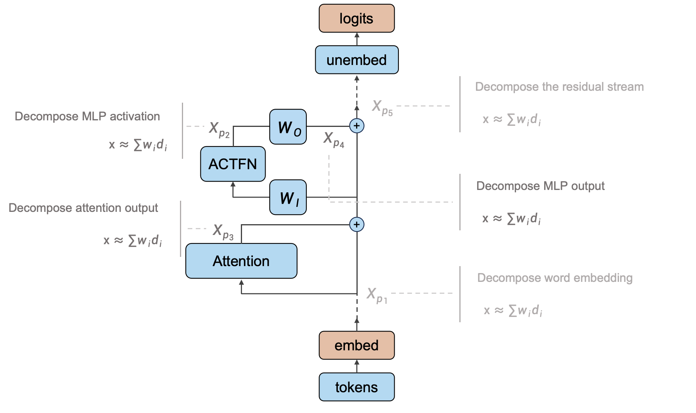
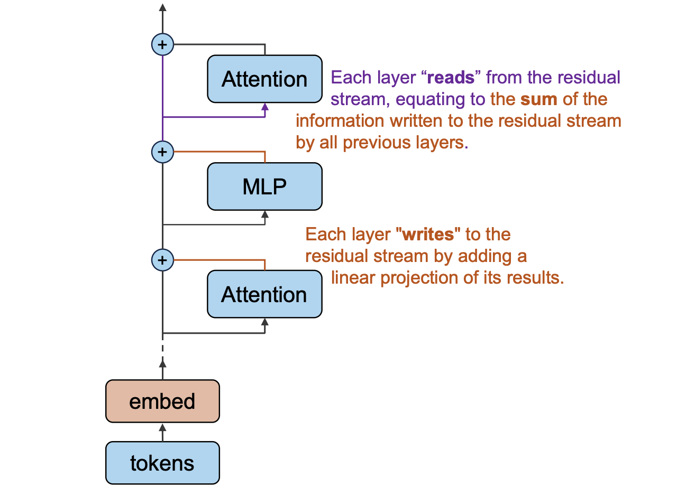
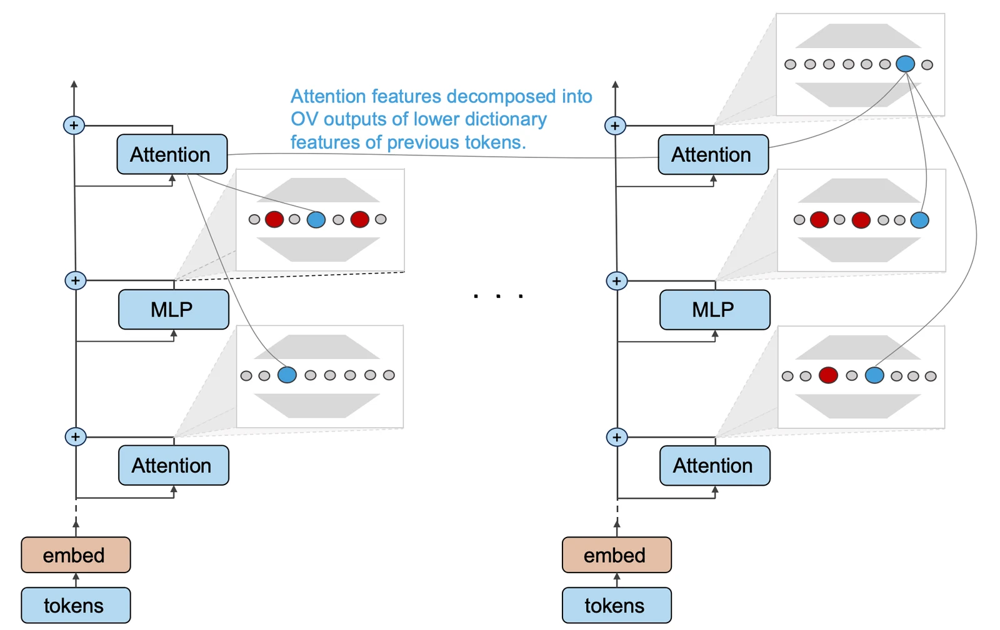
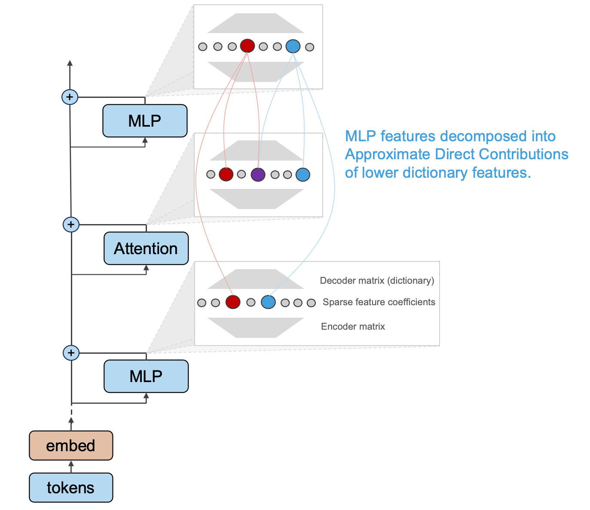
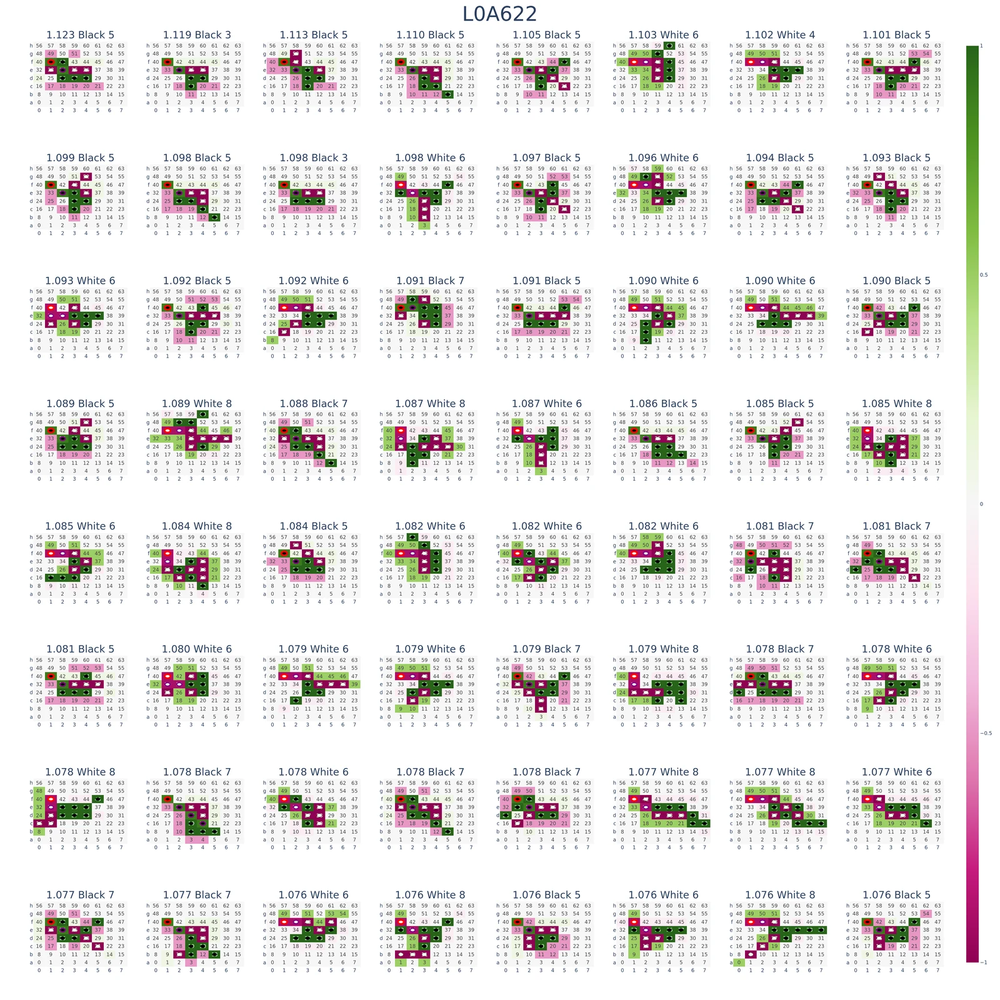
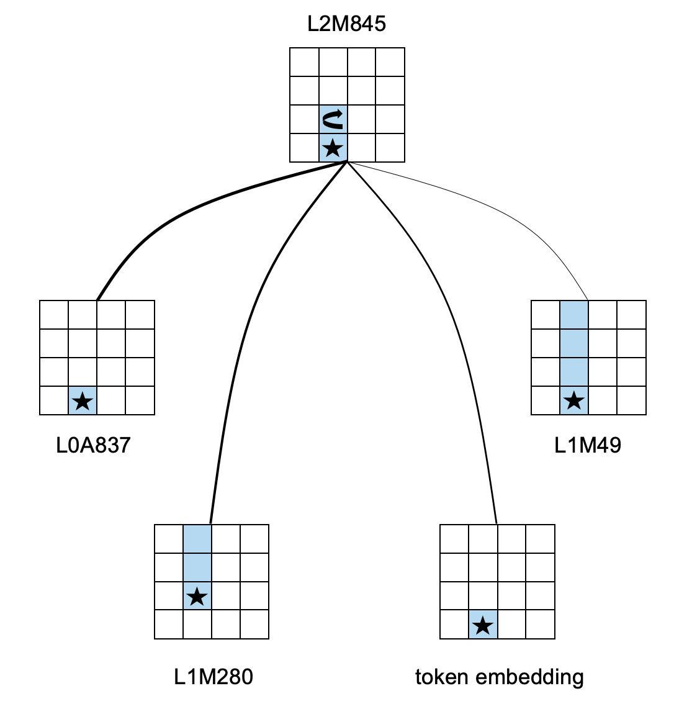
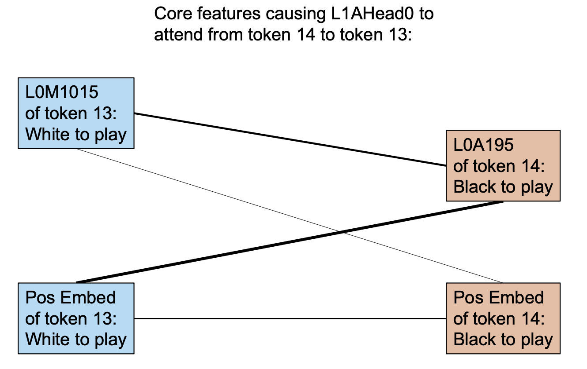

An informal post to share our recent progress on circuit discovery with dictionary learning. We recommend readers to see our first arxiv version for cleaner demonstration (More experiments coming up). Open source code is to be published at our GitHub repository.
Introduction
In recent years, advances in transformer-based language models have sparked interest in better understanding the
internal computational workings of these systems.
Researchers have made some progress in identifying interpretable circuits and algorithms within GPT-2, but much of
the model's broad language generation capabilities remain opaque.
The emerging field of Mechanistic Interpretability
In the mechanistic view of transformers, understanding model activations is a central task. Activations answer an important question in mechanistic interpretability: what high-level features does the model compute? Recent advances in sparse dictionary learning have opened up new possibilities for extracting more interpretable, monosemantic features out of superposition. Hypothesis of linear representation grants researchers the convenience of feature superposition and attacking the dimension curse. By learning sparse dictionaries that decompose activations into semantically meaningful directions in the representation space, we are able to gain more microscopic insight of model representations.
This work proposes a circuit discovery framework utilizing sparse dictionaries to decompose activation spaces into interpretable information flows that can be traced through a subset of layers or end-to-end in the model. Our framework aims to answer three questions:
- Explaining dictionary features w.r.t inputs / outputs.
- Explaining how high-level features are computed from low-level ones.
- Explaining how features affect model logits.
These questions as a whole explains almost every property of a model. They, however, are somehow orthogonal in our research agenda. Developing dictionary training techniques and better interpreting methods of dictionary features is crucial in the first question. Prior work has made some advances on this topic. The second question is in comparison less discussed in the literature. The last can be solved with existing techniques in Mech Interp.
We apply our theoretical framework to analyze a decoder-only transformer trained on a synthetic task called Othello. Experiments provide concrete evidence that dictionary learning can extract interpretable features and improve end-to-end circuit discovery. Moreover, we are able to determine how a given feature is activated by its lower-level computations, which has been challenging for existing mechanistic interpretability methods like probing and patching.
Summary of Results
- Interpretation of dictionary features： Dictionaries decompose the activations into families of interpretable features. Some of them have been found in prior work. Dictionary learning discovers these features in an unsupervised way. However, better interpretation still requires human knowledge.
- Information flow of attention modules: Our theory posits that dictionary features of each attention module output can be decomposed into contributions from features of other tokens, and the magnitude of these contributions indicates how the attention module transfers residuals of other tokens into the information for the current token.
- Formation of attention patterns: In our theory, the attention score between any pair of tokens in a given attention head at a given layer can be decomposed into a sum of contributions from features of the two tokens, which can reveal the reasons behind the attention pattern generated.
- Information processing of MLPs: Theoretically, we can explain how each dictionary feature outputted by an MLP is computed from its bottom features, thereby understanding how the massive parameters in an MLP operate on the information flow. We have some discussions on the extensions of our MLP theory.
- Experimental validation: We have relatively optimistic results in practice on Othello models. Applying the above theoretical framework allows computing an interpretable circuit for most features, with significantly improved granularity and generality compared to existing circuit discovery methods.
Our Theoratical Framework
Sparse dictionary has shown its great potential on extracting monosemantic features in transformers in an unsupervised manner. It works to an unprecedented extent on multiple positions of the residual stream and on multiple sizes of models. We claim that dictionary learning also grants new possibilities for circuit discovery. We can start from any feature (or model output), recursively tracing down to the input embedding to find one (or a group) of local (or end-to-end) circuits.
We follow A Mathematical Framework of
Transformer Circuits
-
What information does the attention module transfer:
For each attention head, after determining the attention weights, representations are transferred from one token
to another by multiplying the representations with two weight matrices
W_{V} andW_{O} . Which features of the source token are transformed into which features of the target token through this information move? - How are the attention weights formed: The attention head computes the inner product of the Q and K vectors of two tokens to obtain the attention score between them, which is then normalized to the attention weight via the Softmax function. For a given attention score between two tokens, we want to understand which features caused this attention.
- How does the MLP process features: The MLP output introduces new information into the residual stream. Which features are used to compute this new information?
Interpretable Sparse Coding with Dictionary Learning
If the internal structure of Transformers were more interpretation-friendly, with linear interpretable features
neatly corresponding to neurons and their activation strengths, it would be straightforward to analyze each
neuron's purpose based on when it activates, and understand the model's reasoning by looking at each neuron's
activation value for a given output.
This assumption has major limitations
Furthermore, prior work on Privileged Bases
- Arbitrary directions: Applying arbitrary rotations uniformly across the parameters of a Transformer results in an equivalence family of Transformers with equal standing and identical behavior. Since Transformer computations have invariance to rotations applied uniformly to every matrix, in theory it does not need to place features along axes determined by the neurons.
- Preference for neuron directions: Although in representational space, the basis determined by the neurons are on equal footing with any other orthogonal basis, there are factors that make Transformers likely to "place" features along the neuron-determined directions.
Due to the aforementioned issues with understanding neural network model internal from the neuron perspective,
there is a need for a more general approach to find an "interpretable basis" constituting these explainable
directions, which are quite likely to be overcomplete.
Moreover, a major drive behind superposition is the sparsity of the features, which is also an important property
often present in real-world tasks.
Therefore, utilizing sparse dictionary learning to extract features aligns well with these two important
properties of overcompleteness and sparsity.
Overall, the goal of sparse dictionary learning is to find, through an autoencoder, a set of overcomplete bases
For a model activation captured at a given position in the transformer, we can decompose it into a weighted sum of a group of (more) interpretable dictionary features:

Where Should We Train Dictionary on?

Viewing the residual stream as the memory management center of transformer, and each Attention and MLP module read
from and write to it, is an important concept for understanding how information flows in transformers.
Previous work based on dictionary learning has typically studied: word embedding
- Decomposing word representations: Word representations are the initial state of the residual stream and trigger of subsequent computation. Existing work that uses dictionary learning to decompose word representations into interpretable additive features is a good starting point. However, this alone is not enough to fully understand the entire model.
- Decomposing the residual stream: Decomposing the residual stream between each transformer block has the benefit of being intuitive, clearly capturing internal feature changes. However, this approach has some problems. If a shared dictionary is used to decompose all positions of the residual stream, distributional shifts at different model depth will greatly impact dictionary features. If each position is trained separately, the input and output will lie in two different vector spaces spanned by different dictionary bases, so their difference cannot be directly computed. Corresponding concepts between the two bases would need to be identified to enable interpretation.
-
Decomposing MLP hidden layers:
This choice is based on the fact that in the prevalent pre-norm Transformer architecture, we only need to
understand the components written to the residual stream by each module and sum them to obtain the final result,
without needing to interpret the residual stream itself.
Under this view, we have two strategies: decomposing the MLP output or MLP hidden layers.
Compared to the former, directly analyzing the MLP hidden layers increases the number of trainable model
parameters by 4-16 times
(d_mlp / d_model) squared . In addition, since the MLP downprojection matrix MLP_out represents a linear mapping from a high-dim to low-dim space, some decomposed features could lie in its nullspace.
Based on the above analysis, we believe it could be beneficial to use dictionary learning to decompose the following three parts: word representations, the output of each Attention layer, and the output of each MLP layer. Although there has already been considerable Mechanistic Interpretability work analyzing Attention heads compared to MLPs, we think incorporating them into a unified dictionary learning framework is necessary. This setting would be helpful for understanding Transformers in a systematic and scalable way.
Module Input Decomposition

As shown above, the input of any Attention or MLP block
Dealing with Non-linearity of LayerNorm
In prevalent transformer architectures, LayerNorm is usually applied after each module makes a copy of the residual flow, i.e. pre-norm. Although the input to each module can be linearly decomposed into the sum of outputs from all bottom modules, LayerNorm itself is not a linear operation. This prevents us from attributing a certain consequence to each linear component, which is an important issue to resolve for facilitating subsequent analyses.
The above pseudocode describes the computation process of LayerNorm, where the step of calculating the standard deviation is non-linear to the input x. To address this, we treat the standard deviation of x as a constant rather than a function of x. This allows us to transform LayerNorm into a linear function of x without changing the computational result. With this transformation, we can now apply the modified LayerNorm separately to any linear decomposition of x to estimate the impact of each component on the result. This resolves the issue of analyzing LayerNorm for facilitating subsequent analyses.
Specifically, when we are interested in the final LayerNorm before the unembedding, this technique can be used to analyze the impact of each module on the output logits. This technique is called Direct Logit Attribution and has been applied in quite a few Mech Interp works.
Dissecting OV Circuits

Each attention head needs to transfer the input of token
The superscript
Due to the independent additivity of multi-head attention, the output of the attention module at token
Therefore, the output of an attention module at token
Moreover, we decompose the output of each module into weighted sum of dictionary features:
Each dictionary decomposition is composed of a group of activation magnitude
Dictionary encoder of LXA takes in
By utilizing the linearized LayerNorm introduced in the last section, we manage to attribute the activation magnitude of Y-th dictionary feature in the i-th token to all dictionary features in the bottom of LXA of all tokens.
Attributing Attention Patterns to Dictionary Features

In LXA, each head determines how much proportion of its attention from token
We denote the item before Softmax
In particular, since input of each token to LXA can be decomposed to dictionary features of bottom modules in its own residual stream, i.e.
By further denoting the sum of all dictionary features of all bottom modules as a whole, we get a clear bilinear
form to dissect
Thus for any given
Attributing MLP features

The MLP module accounts for over half of the parameters in Transformer models, yet research on interpreting MLPs is significantly less than for attention modules in the field. This may be because the MLP itself has a simpler form, while neuron-based research has certain limitations. Under the framework of dictionary learning, we appear able to understand more about the internal features of the MLP.
The output of LXM can be written as follows:
Again, by viewing all dictionary features in one residual stream as a whole, we thus get the activation of the Y-th dictionary feature of the X-th layer:
We conjecture that a given MLP feature is activated by a small subset of lower features. To verify this, we need to measure the contribution of each lower feature to the MLP feature. In addition, if this is true, it would be inspiring to identify these core contributors.
Definition
We define the approximate direct contribution
We omitted LayerNorm in the definition above for simplicity since it can be linearized. Then the dictionary feature of an MLP output can be written as:
The intuition behind
Properties
The non-linearity introduced by the activation function Act_fn in MLP hidden layers is key to interpretability.
We find that prevalent activation functions are always in some form of self-gating
We consider the effect of input features on each MLP neuron since the activation of any dictionary feature is a linear function of MLP neurons.
If we consider the contribution of a single input feature
Approximate direct contribution can capture the former type of contribution since for any monotonically
non-decreasing non-negative self-gating function
However, the latter type of contribution, suppressing neurons with negative effects, is not captured well by
Experiments
Game of Othello
We used a 1.2M parameter decoder-only Transformer to learn a programmable game prediction task named Othello. The model only learns to play legal moves, not tactics.
The rule of Othello is as follows: Two players compete, using 64 identical game pieces ("disks") that are light on one side and dark on the other. Each player chooses one color to use throughout the game. Players take turns placing one disk on an empty tile, with their assigned color facing up. After a play is made, any disks of the opponent's color that lie in a straight line bounded by the one just played and another one in the current player's color are turned over.
The figure above shows the progress of a game
As shown in the figure, there are 60 empty slots on the chessboard, so the game lasts 60 moves in total. By recording the position of each move, we can represent a game using a sequence of length 60:
By sampling a position from the set of valid moves at each step, we can generate millions of such game records. Our setup is to model these sequences in an auto-regressive manner. Just like a language model predicts the probability of the next word, this task models the probability of the next legal move.
This task was originally proposed in this ICLR 2023 spotlight paper
One ingenious aspect of this task is that the input sequence itself provides very little information: only the order of moves, without the current state of the board. In addition, the model has no prior knowledge about the board or rules - it does not know the input sequence unfolds according to alternating players, nor the mapping between the input sequence and board positions. Given such difficult conditions, it is remarkable that the model can complete this task. Even if humans know the real-world meaning of the sequence, figuring out the next valid move requires recursively simulating the process and careful deduction. The Transformer's computational resources are fixed, it cannot explicitly complete such recursive reasoning. Therefore, even without taking this task as a starting point to understand large language models, fully understanding its principles can provide great insight into the inner mechanism of Transformers.
Model Configuration
We focus on decoder-only Transformer. The model architecture is shown below:
Although previous work
- Removing Dropout: Dropout naturally introduces redundancy which increases the difficulty of inversion.
- Reducing model parameters: Without sacrificing model performance or interpretability conclusions, we made the model shallower to reduce repetitive experimental sections.
Dictionary Learning Experiments
The model has a total of 12 Attn/MLP modules. We train a dictionary for the output of each module, where the input dimension of the dictionary is always d_in=128, and the hidden layer has n_components=1024. We sample 4e8 sequences for training the dictionaries, i.e. 4e8 * 60 = 2.4e10 tokens. For each token, we input it together with the context into the Transformer model, and record the output of each module. Although each token depends on the context, we treat the representations obtained for each token as completely independent during training. We shuffle and sample them to train the dictionary for reconstructing each module's output.
The figure below shows the 2-norm of the average input representation for each layer. The almost invisible error bars indicate the average reconstruction error. The dictionaries can reconstruct the output of each module with almost no loss:
After training, we have 12 dictionaries corresponding to the 0th layer Attn to the 5th layer MLP from bottom to top. We denote them as L0A-L5M for the Attn and MLP layers of layers 0-5.
For each dictionary, we compute the activation level of the features. Under the assumption that dictionary learning can extract meaningful (maybe not human-understandable) features, there is feature superposition across all layers in this model:
Since the world that needs to be modeled for this task is much simpler compared to language modeling, while its
hidden dimension d_model differs from language models by only 1-2 orders of magnitude, the superposition is
expected to be even more severe in real language models.
In addition, techniques like resampling dead dictionary neurons can extract even more features and finer-grained
interpretability
The figure above describes the over-completeness of features inside the model. Another important property of the internal features is sparsity. The figure below shows the average number of activated features per token in each dictionary. In this model, the output of all layers can be reconstructed with fewer features than the hidden dimension:
For the same reason, features in real-world LMs should be more sparse
Feature Interpretation
For a given input sequence, we can determine a unique board state.
The figure below shows the board state corresponding to the above sequence:
In the original work
Based on the "Mine vs. Theirs" perspective, we can better understand the dictionary features introduced below.
For the features extracted by dictionary learning, we only examine the "active features" that have activation
frequencies above a certain threshold.
We denote these active features as follows: For the Y-th feature decomposed from the Attn/MLP output of layer X,
we name it LX{A/M}Y
For each feature, we examine the samples that activate it the most. The figure below shows an example of the 64 inputs that activate L0A622 the most:

It is difficult to directly observe patterns from such images, and it is very prone to visual illusions. Therefore, we designed the following interface:
For a given dictionary feature, we examine the top-k inputs that activate it the most among 1.2M tokens and compute the following statistics over the k input sequences/board states:
- Current player: The pie chart in the first row first column shows the proportion of piece colors among the k inputs.
- Current move position: The heatmap in the first row second column shows the number of times each cell is played in the k moves.
- Legal move positions: The heatmap in the first row third column shows the number of times each cell is a legal move in the k board states.
- Board state: The heatmap in the second row first column: for each cell in the k board states, take 1 if the cell has the same color as the current player ("own piece"), -1 if different color ("opponent piece"), and 0 if empty. Summing over the k boards gives the total board state.
- Flip counts: The heatmap in the second row second column shows how many times a piece is flipped on each cell among the k moves.
- Number of empty cells: The heatmap in the second row third column shows the number of empty cells in the k board states.
- Game length: The bar plot in the third row shows the distribution of game lengths.
In the above statistical plots, k is taken as 2048. Each such statistical plot reflects the behavior of one feature. The heatmap in the first row second column shows that among the 2048 inputs L0A622 is most interested in, all current moves are at position f-1. Therefore, we can interpret this as a "current move = f-1" feature. We discuss our method of interpreting dictionary features in detail in the How to Interpret Dictionary Features? section.
We mainly found the following types of features:
- Current move position features: There are many features in L0A and L0M that respond to the current move being at a specific position, e.g. {L0A53: current move at g-5}, {L0A80: current move at e-0}, {L0M996: current move at a-4 flipping the piece above}, {L0M195: current move at c-1 flipping the piece on the right}, {L0M205: current move at c-1 flipping the piece at top right}.
- Features representing board state: There are many features in L1A to L4M describing the current board state, e.g. {L1A626: f-1 is opponent's piece}, {L1M158: e-2 is own piece}.
- Features for empty cells: L5A contains many features describing a cell being empty, e.g. {L5A336: c-3 is empty}.
- Features for legal moves: L5M contains many features indicating a position is a legal move, e.g. {L5M733: b-3 is legal}.
Compared to previous work, we have some new findings:
-
Almost all features representing empty cells appear in L5A, which is quite different from the probing-based work
by Neel Nanda et al.
. They found empty cells can be probed right after L0A, while we see these features are explicitly computed only in L5A. - We discover features in L0M of the form "moving to X and flipping the piece in some fixed direction", different from the "piece at Y flipped this move" features found by probing.
These two differences are not contradictory. We think the probed behaviors are a kind of compositional feature.
Overall, we find a significant portion of features can be interpreted, although some features remain opaque, usually with small activation values.
Discovering Circuits in Othello Model
In this section, we introduce circuits discovered in the Othello model.
Understanding Features and Model Output with Direct Logit Attribution
By applying Direct Logit Attribution, many Mech Interp works attribute specific logits to certain MLPs or attention heads, to help analyze their roles. Here we ask a more detailed question: If dictionary learning can decompose each module's output into a sum of interpretable features, which features contribute more to a given logit?
We randomly sample a batch of data, and randomly pick one step from it. The corresponding board state is as follows:
The model predicts the following result:
The model successfully predicts legal moves. We can analyze any logit, for example the 33rd position on the board, which has a logit of about 8.29. We compute the Direct Logit Attribution for each feature, with results shown below:
In the above figure, we have removed features with absolute contributions smaller than 0.1. We find L5M499 has a particularly prominent contribution. The behavior of this feature is:
We focus on the first row, third column statistic describing legal positions. This heatmap represents that among the 2048 inputs with the strongest activation of L5M499, a large portion describe "d-1, e-1, f-1" as legal, which coincides precisely with the aforementioned board state. Combining this with the other examples we attempted, we arrive at a conclusion: The majority of logits on the board are primarily activated by a few L5M features, exhibiting direct causality, and these features tend to be relatively specialized in their responses.
Understanding MLP Feature Activations Through Approximate Direct Contributions

In the previous section, we established a connection between the model output and the features of the highest MLP layer. A natural follow-up question is: how are these MLP features computed?
We randomly select a board state again, as shown below:
In the board state shown above, we choose the feature L2M845 with the highest activation in L2M, which has an activation value of 1.4135. The behavior of this feature is relatively easy to understand; it indicates that the model plays a move on b-4 or b-5 and flips the piece at c-4:
We list the features with absolute approximate direct contribution values less than 0.05:
We find that there are four important contributors: L0A837, L1M280, embedding, and L1M49. A brief description of the corresponding features is as follows:
- L0A837: The current move is played on b-4.
-
L1M280: The current move is played on c-4
This does not match the current move. , and d-4, e-4 are the player's own pieces. - embedding: The current move is played on b-4.
- L1M49: The current move is played on b-4, and the pieces from b-4 to e-4 are likely the player's own pieces.
The common aspect of these four features is that they all describe the flipping situation in column 4. From a human-understandable perspective, these features are sufficient conditions for {L2M845: c-4 is flipped}. We have some confidence that this reveals a pattern in which the model derives higher-level features from lower-level features.
Understanding Information Transfer in the OV Circuit

We again randomly sample a board state:
We find that L2A474 primarily describes a specific board state centered around c-2, which corresponds well to the current board state, with an activation value of 0.70 in the current state:
Using the analysis theory of the OV circuit, we list the contributions of all features below L2A to this feature:
The image omits features with absolute contributions less than 0.03, where PX represents information from the residual stream of the Xth token (X ranges from 0-7 in this example). We find that the three features with the largest contributions are all related to this board state:
- P7L1M379: Located in the same token residual stream as P7L2A474, it describes that c-3 and d-4 are the player's own pieces, which may directly affect P7L2A474's response to these two positions.
- P6L1M755: Located in the preceding token residual stream of P7L2A474, due to the opposite move color, the two have opposite concepts of the player's own pieces and the opponent's pieces on the board state. Since L1M755 describes that c-2, d-3, e-4 are the player's own pieces, its contribution to P7L2A474 is that "since c-2 was the player's own piece in the previous move, it will become the opponent's piece in the next move."
- P5L1M179: Located two token residual streams before P7L2A474, corresponding to the board state two moves ago. L1M179 describes that d-2, d-3, d-4 are the player's own pieces, and its contribution to P7L2A474 is that "since d-2 was the player's own piece two moves ago, it should still be the player's own piece."
Additionally, we find that P6L0A629 has a strong side effect on the activation of P7L2A474, which also has a strong interpretable meaning: L0A629 mainly describes that c-3 is the player's own piece, but since P6L0A629 is located in the preceding token residual stream of P7L2A474, this contradicts P7L2A474's description that c-3 is the opponent's piece, because the perception of one's own pieces and the opponent's pieces is flipped in residual streams separated by an odd number of steps. This contradiction mainly arises because P7's move happens to flip the piece at c-3, while the previous residual stream does not contain future information. We conjecture that there is a very subtle balance in the model, where the negative impact brought by past tokens due to piece flipping is eliminated or even overridden by the positive impact of features describing the piece flipping, thereby always maintaining the most accurate board state information as the game progresses.
For readers, understanding this part should be quite difficult, as the Othello model's unique way of understanding "self vs. opponent" and the complicated board notation pose great challenges for both expression and comprehension. In short, we find that the information transferred through the OV circuit has strong interpretable meanings. The Attn in one residual stream can largely transform the interpretable features brought from other residual streams into interpretable features in the current residual stream. This repeatedly leaves us in awe of the miraculous information flow mechanism inside the Transformer. At the same time, we become more convinced that understanding the model's behavior is not an extremely complex problem; with careful observation, we have a good chance of comprehending these complex information flows.
Understanding the Formation of Attention Strengths

Attention strength is one of the most accessible entry points for interpretability research. Through attention distribution heatmaps, we can easily recognize how much attention each token pays to other tokens. In this section, we analyze one of the most prevalent attention patterns in this model, which takes the following interleaved attention structure:
We conjecture that the formation of this attention pattern is to transfer information from the residual streams corresponding to the player's own moves and the opponent's moves, respectively. If a token is an even number of steps away from the current token, the features describing "belonging to oneself" in the past residual streams should enhance the corresponding features of the current step. We find that this mechanism is often implemented through positional encoding.
Here, we provide an example. In the attention pattern shown in the image above, the last token assigns strong attention to the tokens corresponding to the opponent's moves.
Applying our circuit analysis theory, we investigate which features contribute to token 14's attention score of 5.80 towards token 13 before the softmax operation. The linear decomposition of the contributions is shown in the following image:
We previously discovered that the positional encoding learned by the model contains significant information about the current move color, and the lower layers of the model have several features representing similar concepts. We find that many of the top contributing feature pairs in the image include positional encoding, and we also find that several other important features (e.g., P13L0M1015 and P14L0A195) are strongly correlated with the current move color. This indicates that our circuit discovery theory can identify features related to positional encoding and find that these features directly contribute to the aforementioned attention patterns.
Summary
This part is the core of this paper. Through experiments, we are more confident that our circuit discovery theory can discover the circuits of the model at an unprecedented granularity (i.e., dictionary-learned features). We can understand how a considerable portion of the MLP features and Attn features are computed, and the experimental results are consistent with human understanding.
Under our theoretical framework, along with careful experimentation and summarization, we can gain a relatively in-depth understanding of the general workflow of the Othello model:
- The lower layers of the model contain a lot of local information. With the synergy between the lower modules and the embedding, the model can understand the impact of the current move on the board state and comprehend which pieces are flipped in that move.
- The model (mainly in the middle layers) transfers the board state from the OV circuits of past tokens to avoid redundant computations as much as possible. Combined with the flipping state computed in the previous step, the model can understand the current board state with relatively high accuracy.
- The model (mainly in the higher layers) computes the legal positions based on the board state in the MLP, and combines the information about whether the board is empty from the higher-layer Attn to directly output the decision to the logits.
The findings in this chapter alone are sufficient for us to gain a considerable understanding of the internal structure of the Transformer. For example, in the OV circuit analysis, we discovered that the interpretable relationships and contribution/suppression relationships between features have a strong positive correlation. Additionally, the formation of high-level abstract features in the MLP can often be decomposed into lower-level basic features in a human-understandable manner through approximate direct contributions.
These results give us confidence in understanding language models, and we also gain a lot of knowledge about Transformer models from them. In this chapter, we only show some representative results; this theory can discover far more phenomena than what is presented here. Interested readers can download and run the interactive open-source implementation from the GitHub repo to reproduce or explore the circuits inside this model.
Overall Discussion
Othello and Language Models
Our ultimate goal is to reverse engineer Transformer language models, with the Othello model serving only as a proof of concept. The Othello task is a decent simplified proxy for a language model because its complexity cannot be accomplished solely through memorization; the internal world of this "Othello language" is relatively rich and contains several abstract concepts. This level of complexity makes it valuable as an initial attempt, as tasks that are too different from language models, such as arithmetic tasks, may not yield transferable conclusions. At the same time, it is not overly complex to increase the difficulty of training the dictionary or interpretation, with only 60 tokens in the vocabulary size and the property of no repeated inputs, which to some extent makes our interpretation more clear by excluding many confusing concepts.
We summarize two key differences between Othello and language models that we believe are worth noting within the framework of dictionary learning:
- Dictionary features are far denser than in language models: We find that the model, especially in the
middle layers, has a vast number of features used to describe the board state. As the game progresses and the
board state becomes more complex, more features are activated frequently. This is consistent with existing
observations of language models
. As shown in the figure above, decomposing the L0-norm of higher MLP layers sometimes approaches the full d_model of 128, indicating that the dictionary decomposition is barely sparse at all. Compared to other attempts on language models, such as Anthropic's decomposition of single-layer language models, which can often sparsely activate 10-20 features out of a 512-dimensional representation, the sparsity of our dictionary model is far inferior. We largely attribute this to the fact that the Othello world is much simpler and denser in features compared to the language world, as well as the possibility that the dictionary training implemented in this work is not optimal. - Feature superposition is not as apparent: Similarly, due to the simplicity of the Othello world, we believe that feature superposition is not as apparent in this model, meaning that the d_model of 128 may represent fewer than 128 features. Although the figure above shows that the active dictionary features of each layer's output exceed the d_model, we find that the Othello model is more likely to exhibit the phenomenon of "opposite feature pairs" compared to language models. For example, "b-3 is the player's piece" and "b-3 is the opponent's piece" can be seen as two independent 0-1 features, but from the perspective of "the board state of b-3," these two features can be interpreted as the positive and negative projections of the same feature in certain directions. In other words, if we extend the definition of features from directions in the representation space to include their opposites, the dictionary features would need to exceed twice the d_model to strictly demonstrate the existence of superposition. Although this caveat may exist, we believe that at most, it weakens the motivation for using dictionary learning to understand this model, but does not substantially affect our theory and experimental results.
Both the superposition hypothesis and our dictionary learning process assume that the representation space can be decomposed into a sum of interpretable features. These features appear in the form of unit vectors in space, and their activation strengths represent the strengths of these features.
The activation strengths of these features are non-negative values. In our implementation, we use the ReLU function of the dictionary-learned hidden layer to remap all negative feature activations to zero for this reason.
Under this assumption, features in opposite directions generally have a strong negative correlation, rather than representing the positive and negative activations of a single feature. These two cases are not entirely mutually exclusive. For example, in the feature superposition structure shown in the following figure, the green and blue features represent two unrelated concepts, which are represented in opposite directions due to sparsity. Meanwhile, the model places two mutually exclusive features along the lower-left to upper-right direction, which we can equivalently understand as the positive and negative activations of a single feature. Regardless of how we interpret it, this space must have experienced feature superposition.
Overall, we believe that the results from this task have some reference value, and the differences from real language models will not affect our basic conclusions but remain important details.
How to Interpret Dictionary-Learned Features?
Suppose we extract the dictionary-learned features and can obtain several inputs with relatively high activations
for each feature. How should we interpret these inputs? In the long run, we will inevitably need some form of
automated method, such as using large language models to interpret language features
To evaluate the interpretation results, we conducted verification on a small number of features, following a process similar to existing automated interpretation approaches. We illustrate with an example:
- First, we observe important statistics of a particular feature. As shown in the following figure, we hypothesize that L5A172 indicates that the position f-4 is empty:
- We randomly sample N inputs and, based on the game rules, determine whether these inputs conform to the pattern corresponding to the hypothesis, categorizing them into two groups.
- We then examine the activation differences of the two groups of board states for the given feature:
Visualizing the feature activations can provide an intuitive understanding of activation specificity and sensitivity, but quantitative evaluation metrics are still necessary, which we believe is an important direction for future research.
Dictionary Learning and Probing
Both dictionary learning and probing
Another important difference is that, compared to probing methods that require first proposing definitions or classification labels for features, dictionary learning can extract features in an unsupervised manner. However, supervisory signals may still be necessary because interpreting these features is likely to require a significant amount of prior knowledge. The task demonstrated in this paper is an excellent example. In the original work, the authors' linear probing for black and white pieces did not perform well, but subsequent work significantly improved the probing performance from the perspective of "self" and "opponent," indicating that our prior understanding of the internal feature families of dictionary learning may help us interpret a large batch of originally unclear features.
We believe that the most important issue is the fundamentality of dictionary-learned features, which we discuss separately in the next section.
Basic Features and Compositional Features
In prior research on OthelloGPT, researchers used probing methods to discover Flipped features in the model, which indicate whether a certain board position was flipped in the current move. However, we did not directly find such features in our dictionary learning results. But similarly, we identified a series of features that indicate the current move is played at a certain location and flips pieces in a fixed direction. For example, in L0M, there is a pair of features, both corresponding to the current move being played at c-2, but L0M195 is only activated when the move flips the pieces to the right, while L0M205 is activated when the move flips the pieces to the upper right. These two features have a cosine similarity of -0.13 in the representation space, indicating a considerable degree of independence between them.
Therefore, we conjecture that the set of features obtained through dictionary learning may be more "basic" features. In the above example, the Flipped features obtained through probing could be a linear combination of the corresponding flipping features from the eight surrounding directions of that board position, making it a compositional feature formed by basic features. This is a rather vague topic. We believe that "basicness" is a relative concept. Anthropic's dictionary learning research has shown that as the dictionary hidden layer keeps expanding, the granularity of the descriptions of the obtained features becomes finer, and subsets of the features in a large dictionary can form a "feature cluster" that manifests as a single or fewer subsets in a smaller dictionary. Based on this observation, we believe that the larger the dictionary, the more basic the features obtained through decomposition, due to the motivation in the dictionary training process to form sparse decompositions with a limited number of neurons. In contrast, the feature directions obtained through probing do not have any prior notion of basicness, which is the basis for our conclusion above.
Similarly, we conjecture that features in real language models indicating sentiment or factuality
Circuits and Randomness
In the three circuits of QK, OV, and MLP, we can characterize a certain type of contribution. In the QK circuit, this contribution is the bilinear product of arbitrary feature pairs from two residual streams; in the OV circuit, it is the result of features from other token residual streams passing through the OV circuit; and in the MLP, it is the approximate direct contribution.
However, due to feature superposition, independent feature pairs cannot be represented in orthogonal directions, so their contributions should follow some random distribution. We need to clarify whether the contribution between any two features arises from randomness or is a result of the circuits learned by the Transformer.
For example, in the approximate direct contribution figure mentioned earlier, we cannot determine where to draw the line to clearly distinguish whether the strong contributing features before that point are intentionally implemented by the model, while those after are just minor noise caused by feature superposition:
The reality is more likely that such a line does not exist. An important motivation for feature superposition is to reduce training loss, so establishing a weak positive superposition between two weakly positively correlated features aims to minimize information interference in expectation. Therefore, the contributions we observe to some extent reflect the strength of these correlation relationships.
This blurs our understanding of circuit definitions. Combined with existing circuit research, we are more convinced that most behaviors inside the model are a combination of multiple positive and negative circuits. Just as the model's predicted logits are a mixed strategy, the internal flow of information is also a mixture.
Under this conjecture, we may only be able to understand the most significant part and be prepared to encounter potential explainability illusions at any time. Nevertheless, we believe that this alone is sufficient for us to gain a very deep understanding of how Transformers work internally.
Furthermore, since features in real language models are sparser, the hidden layers are wider, and the semantic set (i.e., the world) spanned by all features is more extensive, we conjecture that the information flow from the OV circuit will be more explicit in language models.
Scalability of This Paper's Theoretical Framework
Ultimately, we hope to apply the methods discussed in this paper, with many engineering improvements, to larger language models using similar analyses. Although the model used in this paper is relatively small and the task is not language modeling, we believe that the existing results are sufficient to support direct application to language models since both the dictionary learning and circuit analysis parts are independent of model size or task.
An important outstanding issue is dictionary training for language models. On the most basic sparse autoencoder
structure, many works have proposed algorithmic improvements and practical experiences; better algorithm design
can help us find the Pareto optimal boundary among computational resources, reconstruction error, and feature
interpretability. This problem is crucial for all dictionary learning works. For instance, the ultimate goal of
sparse constraint optimization should be the L0-norm of the dictionary hidden layer. The widely adopted L1-norm
has nice properties such as convexity, but whether better sparse constraint losses exist is a potentially
important question. In dictionary optimization, techniques like warming up Adam momentum
The interpretation of dictionary features has been discussed previously. In language models, using powerful language models to automatically interpret features can at least provide a reasonably credible initial value for each feature. Additionally, building an interactive interpretability interface will likely be the core interface for human fine-tuning or analysis. We believe that these engineering problems can potentially be integrated and developed into a more mature interpretability paradigm through continuous optimization.
Our circuit analysis theory itself is not affected by scaling issues, but certain adjustments need to be made to
accommodate developments in the Transformer architecture. The analysis of the QK circuit is fully compatible with
popular positional encoding methods. The GLU module
In the practice of circuit analysis, an interactive interface would greatly facilitate circuit discovery. These engineering problems could potentially become byproducts of the process of scaling up interpretability.
Summary
We propose a highly general interpretability theory. Under the assumption that dictionary learning can extract as many interpretable features as possible from each MLP and attention module, we further propose a circuit discovery theoretical framework that can connect all features in the computation graph, forming an extremely dense connection diagram.
Although this ideal diagram involves a vast number of connections, we believe that feature sparsity and a considerable degree of independence between features are helpful for understanding these connections, allowing us to comprehend the relationship between each feature and all its bottom features within a complexity acceptable to humans. Sparsity ensures that each input only activates a few features, and we conjecture that the activation of each feature originates from only a few of its bottom features rather than the joint action of all features.
Due to the generality of our theory, our scope covers many previous mechanistic interpretation research approaches. We conjecture that features discoverable through training linear probes can also be found through dictionary learning, and methods such as Activation Patching can also be naturally applied within this framework. If this method can be applied to at least GPT2-small level language models, we believe that we can "rediscover" many existing conclusions within this framework, including the local effects of attention heads (groups), knowledge in the MLP, and the discovery of various global circuits, and help us uncover new phenomena.
We can summarize the significance of this theory with two "generalities". First is feature generality: we do not need any prior knowledge about the internal information of the model; we only need to train a dictionary in an unsupervised manner to decompose many interpretable features. Second is circuit generality: our circuit analysis weakens the prior understanding of circuit structures; we only need to locate the relevant features and start from them (or more simply, from the output), decomposing feature activations into the contributions of their (or other tokens') bottom features. This process can easily discover local circuits, and recursively applying this process may help us uncover many composite circuits.
However, precisely because of its generality, it is unrealistic to discuss all the details in a single essay like this. Even the core dictionary learning component requires substantial coverage to elucidate many important details. At the same time, due to this generality, the conclusions we can present here are only a tiny fraction of the model's many behaviors. If we view the portions we have presented as representatives of "feature clusters" and "circuit clusters", we can be somewhat confident that we may understand part of the model's internal workings, but we have not yet explained all phenomena of Othello-GPT, such as endgame circuits.
Although we believe that this analysis has decomposed many mysteries about Transformers, how to systematize understanding for humans remains an issue. Understanding the source of activation for a specific logit or feature has a relatively fine granularity, and therefore, such understanding would need to be repeated an astronomical number of times to fully comprehend every feature and behavior of the model.
Furthermore, we believe that we are at an early stage in both dictionary learning and circuit discovery theory. We cannot claim that dictionary learning has completely extracted all features, or that every feature is monosemantic or interpretable, or that every discovered feature activation can be sufficiently or accurately decomposed into its lower-level sources. Any optimization of dictionary learning and circuit discovery theory may open up new possibilities for interpretability.
But regardless of which details we are concerned about, we believe that this theory lays a good foundation for subsequent interpretability research, especially dictionary learning-based research, giving us more hope for the ultimate goal of fully understanding the internal workings of Transformers.
Another important significance of this work is that it is the first post from the Open-MOSS Interpretability group, clarifying some of our thoughts on interpretability research. We hope to focus on the systematic development of Mechanistic Interpretability, find a connection between human understanding and high-dimensional representation spaces, and peel away billions of model parameters to understand their intelligence. Dictionary learning is currently a foundation we place high hopes in, but we are always ready to embrace new possibilities.